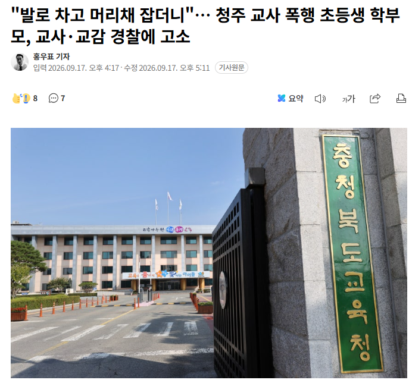

초등생이 60대 교사를 폭행한 그 사건 근황뜸

폭행한 초등생 부모가 교사와 교감을 '아동학대'로 고소함
씹 ㅋㅋㅋㅋㅋㅋㅋㅋㅋㅋㅋ
초등생이 60대 교사를 폭행한 그 사건 근황뜸

폭행한 초등생 부모가 교사와 교감을 '아동학대'로 고소함
씹 ㅋㅋㅋㅋㅋㅋㅋㅋㅋㅋㅋ
뭐 조금만 있으면 학대 가져다 붙이니...
아동한테 학대 당해도 아동학대인거냐 ㅋㅋㅋ
콩콩팥팥
아동이 선생님보다 크네 감당안되네
학부모아님?
고소 실패시 금전적인 피해를 받아야 된다니까
요새 분위기 모르시는구나 ㅋㅋㅋ
잘 가시고 ㅋㅋ 업무방해에 민사까지
쳐맞길
피지컬이 선생님 보다 훨씬 좋은데 촉법소년 나이 만10세로 낮춰야됨
나중에 저 폭력이 자기들을 향할수도 있다는걸 모르는건가
역시 콩콩 팥팥이지
킹동갓대ㄹㅇ전가의 보도임